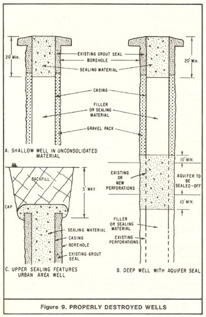

|
CHAPTER II. STANDARDS
Section 23. Requirements for Destroying Wells.
- Preliminary Work. Before the well is destroyed, it shall be investigated
to determine its condition, details of construction, and whether there are
obstructions that will interfere with the process of filling and sealing.
This may include the use of downhole television and photography for visual
inspection of the well.
- Obstructions. The well shall be cleaned, as needed, so that all
undesirable materials, including obstructions to filling and sealing, debris,
oil from oil-lubricated pumps, or pollutants and contaminants that could
interfere with well destruction are removed for disposal.
The enforcing agency shall be notified as soon as possible if pollutants and
contaminants are known or suspected to be in a well to be destroyed. Well
destruction operations may then proceed only at the approval of the enforcing
agency.
The enforcing agency should be contacted to determine requirements for proper
disposal of materials removed from a well to be destroyed.
- Where necessary, to ensure that sealing material fills not only the well
casing but also any annular space or nearby voids within the zone(s) to be
sealed, the casing should be perforated or otherwise punctured.
- In some wells, it may be necessary or desirable to remove a part of the
casing. However, in many instances this can be done only as the well is
filled. For dug wells, as much of the lining as possible (or safe) should be
removed prior to filling.
- 
Filling and Sealing Conditions. Following are requirements to be observed
when certain conditions are encountered:
- Wells situated in unconsolidated material in an unconfined groundwater
zone. In all cases the upper 20 feet of the well shall be sealed with
suitable sealing material and the remainder of the well shall be filled with
suitable fill, or sealing material. (See Figure 9A, of Bulletin 74-
81.)
- Well penetrating several aquifers or formations. In all cases the upper
20 feet of the well shall be sealed with impervious material.
In areas where the interchange of water between aquifers will result in a
significantNote 22 deterioration of the quality of water in one or more aquifers,
or will result in a loss of artesian pressure, the well shall be filled and
sealed so as to prevent such interchange. Sand or other suitable inorganic
material may be placed opposite the producing aquifers and other formations
where impervious sealing material is not required. To prevent the vertical
movement of water from the producing formation, impervious material must be
placed opposite confining formations above and below the producing formations
for a distance of 10 feet or more. The formation producing the
deleterious water shall be sealed by placing impervious material opposite the
formation, and opposite the confining formations for a sufficient vertical
distance (but no less than 10 feet) in both directions, or in the
case of "bottom" waters, in the upward direction. (See Figure 9B.)
In locations where interchange is in no way detrimental, suitable inorganic
material may be placed opposite the formations penetrated. When the
boundaries of the various formations are unknown, alternate layers of
impervious and pervious material shall be placed in the well.
- Well penetrating creviced or fractured rock. If creviced or fractured
rock formations are encountered just below the surface, the portions of the
well opposite this formation shall be sealed with neat cement, sand-cement
grout, or concrete. If these formations extend to considerable depth,
alternate layers of coarse stoneNote 23 and cement grout or concrete may be used to
fill the well. Fine grained material shall not be used as fill material for
creviced or fractured rock formations.
- Well in noncreviced, consolidated formation. The upper 20 feet of a well in a noncreviced, consolidated formation shall be filled
with impervious material. The remainder of the well may be filled with clay
or other suitable inorganic material.
- Well penetrating specific aquifers, local conditions. Under certain local
conditions, the enforcing agency may require that specific aquifers or
formations be sealed off during destruction of the well.
- Placement of Material. The following requirements shall be observed in
placing fill or sealing material in wells to be destroyed:
- The well shall be filled with the appropriate material (as described in
Subsection D of this section) from the bottom of the well up.
- Where neat cement grout, sand-cement grout, or concrete is used, it shall
be poured in one continuous operation.
- Sealing material shall be placed in the interval or intervals to be sealed
by methods that prevent free fall, dilution, and/or separation of aggregate
from cementing materials.
- Where the head (pressure) producing flow is great, special care and
methods must be used to restrict the flow while placing the sealing material.
In such cases, the casing must be perforated opposite the area to be sealed
and the sealing material forced out under pressure into the surrounding
formation.
- In destroying gravel-packed wells, the casing shall be perforated or
otherwise punctured opposite the area to be sealed. The sealing material
shall then be placed within the casing, completely filling the portion
adjacent to the area to be sealed and then forced out under pressure into the
gravel envelope.
- When pressure is applied to force sealing material into the annular space,
the pressure shall be maintained for a length of time sufficient for the
cementing mixture to set.
- To assure that the well is filled and there has been no jamming or
"bridging" of the material, verification shall be made that the volume of
material placed in the well installation at least equals the volume of the
empty hole.
- Materials. Requirements for sealing and fill materials are as follows:
- Impervious Sealing Materials. No material is completely impervious.
However, sealing materials shall have such low permeability that the volume
of water passing through them is of small consequence.
Suitable impervious materials include neat cement, sand-cement grout,
concrete, and bentonite clay, all of which are described in Section 9,
Subsection D, "Sealing Material" of these standards; and well-proportioned
mixes of silts, sands, and clays (or cement), and native soils that have a
coefficient of permeability of less than 10 feet per year.Note 24 Used
drilling muds are not acceptable.
- Filler Material. Many materials are suitable for use as a filler in
destroying wells. These include clay, silt, sand, gravel, crushed stone,
native soils, mixtures of the aforementioned types, and those described in
the preceding paragraph. Material containing organic matter shall not be
used.
- Additional Requirements for Wells in Urban Areas.
In incorporated areas or unincorporated areas developed for multiple
habitation, to make further use of the well site, the following additional
requirements must be met (see Figure 9C):
- A hole shall be excavated around the well casing to a depth of 5 feet
below the ground surface and the well casing removed to the bottom of
the excavation.
- The sealing material used for the upper portion of the well shall be
allowed to spill over into the excavation to form a cap.
- After the well has been properly filled, including sufficient time for
sealing material in the excavation to set, the excavation shall be filled
with native soil.
- Temporary Cover. During periods when no work is being done on the well,
such as overnight or while waiting for sealing material to set, the well and
surrounding excavation, if any, shall be covered. The cover shall be
sufficiently strong and well enough anchored to prevent the introduction of
foreign material into the well and to protect the public from a potentially
hazardous situation.
|